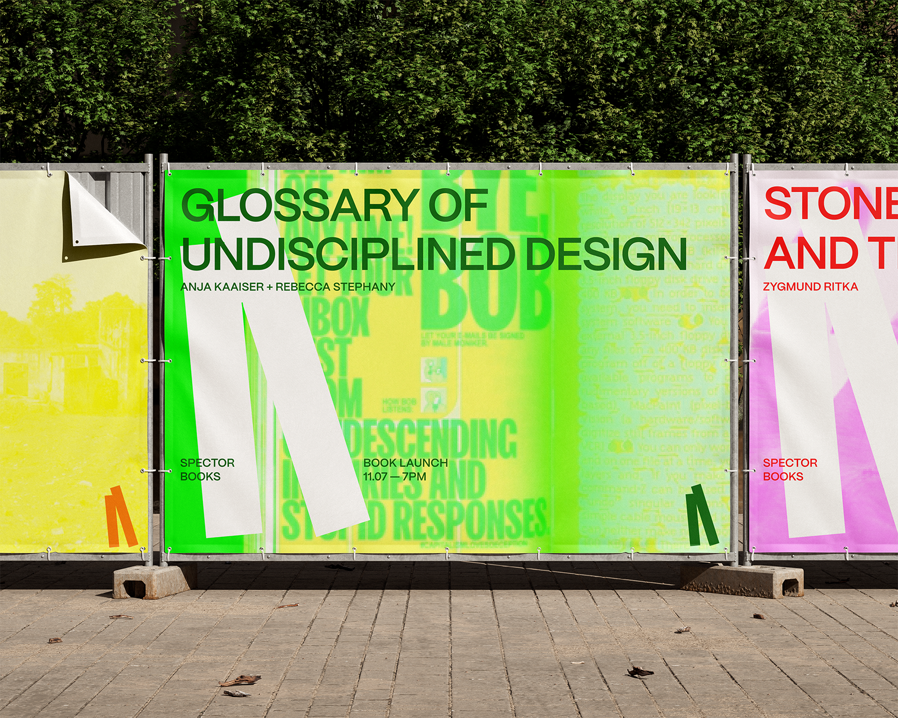

[Editorial Design & Content Edition]
done in collaboration with Beatriz Pinho
Tutors — João Martino and José Bártolo
ESAD — Matosinhos
january 2025
This project reimagines the reader Exception, originally compiled by Chad Dawkins and published by the e-flux platform, as a contemporary editorial object. The core concept of this object was guided by the idea of exception as symptom and strategy, framing it both as a condition imposed by power, and as a lens through which collective resistance and speculative futures can emerge. The publication treats the editorial format as a site of a dialog across the pages, allowing the reader to experience a network of intersecting voices and extending beyond the materialization of a container for the compiled content. The experience provided by the object is marked by the stark contrast between what is text and what is image, where the orientation of reading changes, to allow for a better unfolding of the visual essays that accompany the written work. New contributions were integrated alongside the original essays to reflect how the concept of exception continues to evolve in current socio-political and cultural contexts, not seeking to offer closed answers, but rather proposes a set of open questions.
[Editorial Design]
done in collaboration with Carter Teranes, Krista Corkos & Harcoline Ornstein Reerink
Tutors — André Cruz, Andrew Howard, Ana Resende and Hamish Muir
Porto Design Summer School
july 2025
Starting from the context of the 2025 edition of the Porto Design Summer School, an international project focused on editorial design, this object emerged from the short stories compiled by Paul Auster in the book "True Tales of American Life". The concept chosen for the integration of all the group's themes was time, as a measure, as a compass and as a motivator. Thus, throughout the publication, the time it takes to read is counted, based on the formula that determines that an adult reads, on average, 200 words per minute. In fact, this was the measure chosen for counting the pages, with each one corresponding to a total of 200 words. In addition, each theme was worked on in such a way as to reflect the concept of time in reading, thus visually and logically aggregating the texts corresponding to each one. The aim of this publication was to explore typographic and editorial design concepts, emphasising the creation of a system related to the theme in question.
[Branding & Visual Identity]
Tutor — João Martino
ESAD — Matosinhos
november 2024
Spector Books is a Leipzig-based independent publisher working at the intersection of art, theory, and design. This identity redesign explores the book as the central object and symbol of exchange, a meeting point between author, reader, and publisher. The design system places the book at the heart of the brand, presenting it in a resting state, ready to be activated, selected, or imagined. This visual metaphor translates the publisher’s role in giving form and life to ideas through collaboration and production. Built with flexibility in mind, the identity seeks to adapt itself seamlessly across editorial, promotional, and spatial applications. It seeks to maintain cohesion while allowing for variation, echoing the fluid nature of Spector Books’ interdisciplinary publishing approach.
[Experimental interaction project]
Course synthesis project
done in collaboration with Rafaela Manica, Rafaela Ribeiro & Rui Belchior
Tutors — André Cruz, João Martino, João Castro, José Bártolo, Margarida Azevedo and Miguel Salazar
ESAD — Matosinhos
june 2025
Each of us, in our everyday lives, interacts constantly with digital technologies. Yet how often do we pause to reflect on how we access, develop and relate to these technologies, and on our loss of autonomy and meaningful engagement? Syncope: Friction, Interaction and Digital Navigation is a proposal for a reinterpretation of everyday digital interactions. In this series of digital experiences, something unmistakably recognizable emerges yet misaligned with our usual conceptions of function, form and content. These experiences play with the user’s expectations and emotions embracing time delay, erratic interactions, body movement, humor, frustration and discomfort as essential ingredients in creating a lively and unpredictable experience. This tension is central to the work and aligns with the intention of creating a voice of resistance, urging us to rethink how we interact with digital technology. By feeling structures we are not accustomed to, situations we cannot predict and at a slower pace we create space for exploration and reflection and the possibility of connection with the uncontrolled, with our senses and emotions. The project’s intent is thus defined as an exploration of design friction as a tool for positive disruption: interrupting habitual or mindless routines, revealing systemic behaviors and envisioning new modes of interaction through increasingly cognitive engagement. These explorations are guided by principles adapted from the manifesto "Designing Friction", emphasizing qualities such as discomfort, delay, bodily engagement, unpredictability and a deliberate rejection of purely positive or seamless interactions. "Syncope" is developed in two main complementary components. On one hand, a digital experience composed of a series of alternative digital interactions, which culminates in a physical installation and public exhibition. On the other, a publication that translates the digital experience into a visual print output, reflects and reinterprets the interactive process. A key part of the process is the collection of common tasks and familiar scenarios drawn from our everyday digital interactions, including windows, text input fields, system alerts, sliders, loading bars, maps, gaming environments, forms and graphic components. These elements are approached through a process of sampling and mimicry, highlighting the recognizable structures and logics that shape our digital routines. The intention is to identify which of these digital and physical contexts hold the potential for alteration, through a logic of disruption, hacking or sabotage. "Syncope" suggests that even in these times of connected solitude it is possible to reimagine, develop and choose a desirable future with digital technology.